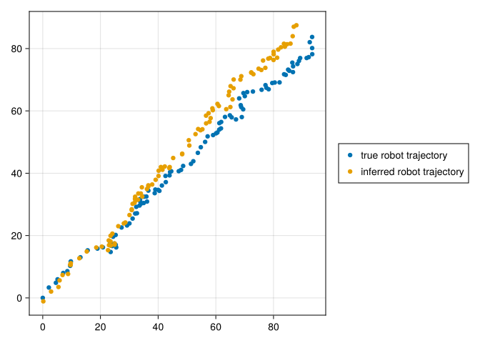

using LinearAlgebra, SparseArrays, FillArrays, Rotations, RecursiveArrayTools, ForwardDiff, DiffResults, LazyArrays, CairoMakie
CairoMakie.enable_only_mime!("png")For a robot to navigate autonomously, it needs to learn the locations of any potential obsticles around it. One of the standard ways to do this is with an algorithm known as EKF-Slam. Slam stands for “simultaneous localization and mapping”, as the algorithm must simultaneously find out where the robot is (localization) and where the obstacles are (mapping). The “EKF” part refers to the “extended Kalman filter”, which is just a fancy name for Gaussian conditioning with Taylor approximations. The idea goes as follows:
Describe the robot by its position coordinates \(u \in \mathbb{R}^2\). Assume it has a sensor that gives noisy measurements \(Y\) of the displacement to an obstacle at location \(v \in \mathbb{R}^2\). Specifically, assume \(Y \sim \mathcal{N}(v - u, \Sigma_2)\).
Let our uncertainty about the locations \(u\) and \(v\) be jointly be described by the random variable \(X \sim \mathcal{N}(\mu, \Sigma_1)\) in \(\mathbb{R}^4\). Given the observation \(Y\), we’d like to find the posterior distribution over \(X\).
Conditioning Gaussians is easier in the natural paramteterization. Instead of describing distributions with a mean \(\mu\) and covariance \(\Sigma\), we describe them with a precision \(\Lambda\) and information vector \(\Lambda \mu\). In this parameterization, say \(X \sim \mathcal{N}(\Lambda_1, \Lambda_1\mu_1)\) and \(Y \sim \mathcal{N}(\Lambda_2, \Lambda_2 (Ax + b))\) where \(A\) is a linear transformation. Then by Bayes’ rule, a little algebra tells us that \[ X | y \sim \mathcal{N}(\Lambda_1\mu + A^T\Lambda_2(y - b), \Lambda_1 + A^T\Lambda_2A) \]
When \(X\) describes robot and obstacle locations and \(Y\) describes noisy displacement observations as above, we get the posterior natural parameters \[ (\Sigma_1^{-1} \mu + A^T\Sigma_2^{-1}Y, \Sigma_1^{-1} + A^T\Sigma_2^{-1}A) \] where \(A = \begin{bmatrix} -I & I \end{bmatrix}\).
We also need to update the distribution for \(X\) when the robot moves. Say we know that the robot’s position was displaced by some \(\Delta \sim \mathcal{N}(\delta, \Sigma_3)\). After this displacement
\[ X \sim \mathcal{N}\left(\mu + \begin{bmatrix} \delta 0 \end{bmatrix}, \Sigma_1 + \begin{bmatrix} \Sigma_3 & & 0 \end{bmatrix}\right) \]
By repeatedly updating our distribution over \(X\) in response to observations \(Y\) and movements \(\Delta\), we can track the likely position of the robot and the obstacle over time.
Adding a Heading
To make this toy example slightly more realistic, let us also give the robot a heading angle \(\theta\). Assume now that the sensor measurement above is rotated \(-\theta\) degrees, so that \(Y = f(X) + \epsilon\), where \(\epsilon \sim \mathcal{N}(0, \Sigma_2)\), \(f(x) = R_x(x_2 - x_1)\), \(x_1\) and \(x_2\) refer to the robot and obstacle coordinate components of \(x\) respectively, and \(R_x\) is the corresponding rotation matrix. Although \(f\) isn’t linear, we can use the Taylor approximation of \(f\) about \(\mu\) to pretend it is. \[ f(x) = f(\mu + (x - \mu)) \approx f(\mu) + \nabla f(\mu)(x - \mu) \] This makes \(Y\) a linear transformation of \(X\), so we can continue to use the standard Gaussian conditioning formula. We get natural parameters
\[ (\Sigma_1^{-1} \mu + J^T\Sigma_2^{-1}(Y - b), \Sigma_1^{-1} + J^T\Sigma_2^{-1}J) \] where \(J = \nabla f(\mu)\) and \(b = f(\mu) - J \mu\). This expression naturally extends to handling observations for multiple obstacles.
This is the EKF-Slam algorithm in a nutshell. With the math out of the way, let’s get to some code.
Code for Observing
While finding the Jacobian above analytically is easy enough, it’s even easier to let Julia do it with Forward mode automatic differentiation.
For ease of notation let \(L=\Sigma_2^{-2}\).
L = 10 * Eye(2,2)2×2 FillArrays.RectDiagonal{Float64, Vector{Float64}, Tuple{Base.OneTo{Int64}, Base.OneTo{Int64}}}:
10.0 ⋅
⋅ 10.0function obs_approx(μ::AbstractVector, ix::Int, y::AbstractVector)
result = DiffResults.JacobianResult(zeros(2), μ)
f(μ) = RotMatrix{2}(-μ[3]) * (μ[ix:ix+1] - μ[1:2])
ForwardDiff.jacobian!(result, f, μ)
f_μ = DiffResults.value(result)
J = DiffResults.jacobian(result)
JL = J' * L
b = f_μ - J * μ
JL * (y - b), JL * J
endobs_approx (generic function with 1 method)Code for Moving
For simplicity, let’s assume that at each step in time, the robot walks in the direction \((1,1)\) and rotates its heading by \(2\pi/100\) radians.
dμ_1 = [1,1,2*π/100]3-element Vector{Float64}:
1.0
1.0
0.06283185307179587These updates are noisy however, accounting for any imprecision in our dynamics model. Our uncertainty about the robot’s location increases at each step according to the following covariance matrix.
Σ3_1 = Diagonal([1,1,0.02])3×3 Diagonal{Float64, Vector{Float64}}:
1.0 ⋅ ⋅
⋅ 1.0 ⋅
⋅ ⋅ 0.02N = 44We add this to our mean vector…
dμ = sparsevec([1,2,3], dμ_1, 3 + 2 * N)11-element SparseVector{Float64, Int64} with 3 stored entries:
[1] = 1.0
[2] = 1.0
[3] = 0.0628319…and this to our covariance matrix…
Σ3 = sparse_vcat(sparse_hcat(Σ3_1, Zeros(3,2 * N)), Zeros(2*N, 3 + 2 * N))11×11 SparseMatrixCSC{Float64, Int64} with 3 stored entries:
1.0 ⋅ ⋅ ⋅ ⋅ ⋅ ⋅ ⋅ ⋅ ⋅ ⋅
⋅ 1.0 ⋅ ⋅ ⋅ ⋅ ⋅ ⋅ ⋅ ⋅ ⋅
⋅ ⋅ 0.02 ⋅ ⋅ ⋅ ⋅ ⋅ ⋅ ⋅ ⋅
⋅ ⋅ ⋅ ⋅ ⋅ ⋅ ⋅ ⋅ ⋅ ⋅ ⋅
⋅ ⋅ ⋅ ⋅ ⋅ ⋅ ⋅ ⋅ ⋅ ⋅ ⋅
⋅ ⋅ ⋅ ⋅ ⋅ ⋅ ⋅ ⋅ ⋅ ⋅ ⋅
⋅ ⋅ ⋅ ⋅ ⋅ ⋅ ⋅ ⋅ ⋅ ⋅ ⋅
⋅ ⋅ ⋅ ⋅ ⋅ ⋅ ⋅ ⋅ ⋅ ⋅ ⋅
⋅ ⋅ ⋅ ⋅ ⋅ ⋅ ⋅ ⋅ ⋅ ⋅ ⋅
⋅ ⋅ ⋅ ⋅ ⋅ ⋅ ⋅ ⋅ ⋅ ⋅ ⋅
⋅ ⋅ ⋅ ⋅ ⋅ ⋅ ⋅ ⋅ ⋅ ⋅ ⋅ … which can be factored as \(U \Sigma_{3,1} U'\), where \[ \begin{align} U = \begin{bmatrix} I 0 \end{bmatrix} \end{align} \]
U = Vcat(Diagonal(ones(3)), Zeros(2 * N, 3))vcat(3×3 Diagonal{Float64, Vector{Float64}}, 8×3 Zeros{Float64}):
1.0 ⋅ ⋅
⋅ 1.0 ⋅
⋅ ⋅ 1.0
⋅ ⋅ ⋅
⋅ ⋅ ⋅
⋅ ⋅ ⋅
⋅ ⋅ ⋅
⋅ ⋅ ⋅
⋅ ⋅ ⋅
⋅ ⋅ ⋅
⋅ ⋅ ⋅ V = SparseMatrixCSC(U')3×11 SparseMatrixCSC{Float64, Int64} with 3 stored entries:
1.0 ⋅ ⋅ ⋅ ⋅ ⋅ ⋅ ⋅ ⋅ ⋅ ⋅
⋅ 1.0 ⋅ ⋅ ⋅ ⋅ ⋅ ⋅ ⋅ ⋅ ⋅
⋅ ⋅ 1.0 ⋅ ⋅ ⋅ ⋅ ⋅ ⋅ ⋅ ⋅ This is a low rank matrix. And we’ll need to invert the resut when we condition on the observations, as described above. So we’ll express our update to the covariance matrix \(\Sigma_1\) in terms of the Woodbury Matrix identity, which says that \((\Sigma_1 + U\Sigma_{3,1}V)^{-1} = \Sigma_1^{-1} - \Sigma_1^{-1} U (\Sigma_{3,1}^{-1} + V\Sigma_1^{-1} U)^{-1}V\Sigma_1^{-1}\). Let \(\Sigma_1^{-1} = \Lambda\).
Λ3_1 = inv(Σ3_1)3×3 Diagonal{Float64, Vector{Float64}}:
1.0 ⋅ ⋅
⋅ 1.0 ⋅
⋅ ⋅ 50.0function update_precision(Λ)
Λ - Λ * U * (((Λ3_1 + Λ[1:3, 1:3]) \ V) * Λ)
endupdate_precision (generic function with 1 method)Putting them Together
We want to update the distribution over possible locations \(X\) after a single time-step. First, the movement of the robot is accounted for by the dynamics model. Then we condition on the observations of each obstacle \(ys\).
tupsum(x,y) = x .+ ytupsum (generic function with 1 method)function step((μ,Λ), ys)
μ += dμ
Λ = update_precision(Λ)
msg = reduce(tupsum, (obs_approx(μ, 4 + 2 * (i-1), y)
for (i, y) in enumerate(eachcol(ys))))
(Λμ, Λ) = (Λ * μ, Λ) .+ msg
(Λ \ Λμ, Λ)
endstep (generic function with 1 method)That’s it! We’ve written the algorithm for EKF-Slam. It remains to see how it performs on fake data.
Fake Data
Here we generate the unknown, true trajectory that the robot takes by following our dynamics model.
K = 100100true_x1s = [zeros(3) cumsum(repeat(dμ_1, 1, K-1) + sqrt(Σ3_1) * randn(3,K-1), dims=2)]3×100 Matrix{Float64}:
0.0 2.11762 4.55484 5.13519 7.09133 … 93.3984 92.5634 93.3861
0.0 3.32292 4.84397 5.95895 8.00179 80.1535 82.0442 83.7126
0.0 0.242689 0.339492 0.622383 0.606434 8.75449 8.83309 8.99149We’ll also set up the true but unknown obstacle locations.
true_x2s = 50 * rand(2, N)2×4 Matrix{Float64}:
19.0432 9.47417 14.7808 1.49347
6.61717 11.7026 39.9869 46.6605begin
f = Figure()
ax = f[1, 1] = Axis(f)
plot!(true_x1s[1, :], true_x1s[2, :], label="robot path")
scatter!(true_x2s[1,:], true_x2s[2,:], label="obstacles")
f[1,2] = Legend(f, ax)
f
end
Imagine the displacement observations the robot sees along its trajectory look like this:
intRootL = sqrt(inv(L))2×2 Matrix{Float64}:
0.316228 0.0
0.0 0.316228ys = [(RotMatrix{2}(-x[3]) * (true_x2s .- x[1:2])) + intRootL * randn(2,N) for x in eachcol(true_x1s)]100-element Vector{Matrix{Float64}}:
[19.603741851669007 9.479204551258722 14.900654400589262 1.2139374388079114; 7.109167442992881 11.775011318681827 39.864880815432244 46.47732302265945]
[17.428417732717854 9.186205752268958 21.58418858968195 10.302514798231858; -1.2775894214216188 6.503682945931601 32.4600792973359 42.1391721408444]
[13.744198022456898 6.46742218871332 21.604198711877444 11.647194636830429; -3.0604680460453797 5.150291438464928 30.071311279180946 40.276065820668954]
[11.719737913056772 6.320470356596162 27.311754677102762 21.15040031222601; -7.2877817184007 1.9961194947595295 22.015843280684727 34.7138674395836]
[9.170647717903567 4.097154497685532 24.594517778984052 17.415084927101788; -8.168926103520667 1.3713381045796311 21.868856926106677 34.58207095408722]
[6.851771008557176 2.8387315768003183 23.86519784545656 17.74815319262439; -7.620934369097298 1.8534328414257264 21.12961974465073 35.08617798718458]
[1.398221192786282 1.2409843183837255 27.95514193245455 26.82854294580393; -10.086407748075187 0.018919119178708033 11.240493348899419 25.699635303326286]
[0.3169655976859883 -0.39285744142372026 26.649019797009263 25.561068751895768; -10.536310387809673 0.30927290312356137 10.084782216747216 25.16572017266392]
[2.0434381516062126 0.5639742214775894 25.912435608559953 23.022673246126974; -10.776295296075798 0.38883939303539855 13.127995130484802 27.676442341737296]
[-2.3710757827037687 -3.2802287127408833 23.21854805575887 21.636363251553103; -8.429720638807137 1.7055137837804848 13.483351917616712 28.44462483387499]
⋮
[-85.01537842242018 -82.61016689991195 -53.73990062912071 -51.62829545307723; 48.31044159300804 58.2521122905678 61.27458633125155 75.24876490536376]
[-77.92158877538101 -74.16003378399459 -45.675320451009426 -40.54218710372369; 60.4334255290315 70.2293122899909 69.20913376130136 83.34947961682585]
[-70.53372215169925 -64.68037466576178 -36.7496876006135 -29.96711191806724; 69.85817704833501 79.24606738372202 74.53101886911851 87.23432715129978]
[-33.98099706546737 -25.03165642202575 -2.057248863963723 10.12979068910752; 95.52485097649517 101.22558541520517 84.60871367148738 94.33592881378806]
[-12.043085472099799 -2.5026403638765027 16.615205968496387 30.48133220980331; 100.64644061904743 106.00976882843113 83.95087259794121 91.08771713790362]
[25.338843399166226 35.91483691197125 46.137066300048794 61.1525044695857; 100.16309327986784 101.23885333657653 74.11040091177298 75.58909399184269]
[11.989506064945864 23.753886929613135 36.95714374615932 51.39192149833056; 103.51764309193247 105.77665278482468 80.20229964834772 83.03976466509822]
[18.689727331037783 29.57774053380095 41.464426214945114 55.489635695847284; 104.09395263404592 104.18947951304438 78.66245385208178 79.59735168397988]
[34.58203052852036 45.39969886132603 53.65821015648627 67.58345887809908; 101.16246858622048 99.85185965577973 72.26982436583816 72.23512917823203]begin
plt = plot([y[1,1] for y in ys], [y[2,1] for y in ys])
for i in 2:N
plot!([y[1,i] for y in ys], [y[2,i] for y in ys])
end
plt
end
Simulating the Algorithm
When we start tracking the robot, we know its location almost (making these precision terms super high), but we know nothing about the locations of the obstacles, so the rest of the precision terms should be low.
Λ1 = Diagonal(vcat(50 * ones(3), (1 / 50) * ones(2 * N)))11×11 Diagonal{Float64, Vector{Float64}}:
50.0 ⋅ ⋅ ⋅ ⋅ ⋅ ⋅ ⋅ ⋅ ⋅ ⋅
⋅ 50.0 ⋅ ⋅ ⋅ ⋅ ⋅ ⋅ ⋅ ⋅ ⋅
⋅ ⋅ 50.0 ⋅ ⋅ ⋅ ⋅ ⋅ ⋅ ⋅ ⋅
⋅ ⋅ ⋅ 0.02 ⋅ ⋅ ⋅ ⋅ ⋅ ⋅ ⋅
⋅ ⋅ ⋅ ⋅ 0.02 ⋅ ⋅ ⋅ ⋅ ⋅ ⋅
⋅ ⋅ ⋅ ⋅ ⋅ 0.02 ⋅ ⋅ ⋅ ⋅ ⋅
⋅ ⋅ ⋅ ⋅ ⋅ ⋅ 0.02 ⋅ ⋅ ⋅ ⋅
⋅ ⋅ ⋅ ⋅ ⋅ ⋅ ⋅ 0.02 ⋅ ⋅ ⋅
⋅ ⋅ ⋅ ⋅ ⋅ ⋅ ⋅ ⋅ 0.02 ⋅ ⋅
⋅ ⋅ ⋅ ⋅ ⋅ ⋅ ⋅ ⋅ ⋅ 0.02 ⋅
⋅ ⋅ ⋅ ⋅ ⋅ ⋅ ⋅ ⋅ ⋅ ⋅ 0.02start = (zeros(3 + 2 * N), Matrix(Λ1))([0.0, 0.0, 0.0, 0.0, 0.0, 0.0, 0.0, 0.0, 0.0, 0.0, 0.0], [50.0 0.0 … 0.0 0.0; 0.0 50.0 … 0.0 0.0; … ; 0.0 0.0 … 0.02 0.0; 0.0 0.0 … 0.0 0.02])progress = VectorOfArray([p[1][1:2] for p in accumulate(step, ys; init=start)])VectorOfArray{Float64,2}:
100-element Vector{Vector{Float64}}:
[0.19603470614227045, -1.1019964687272161]
[2.889909146537032, 2.0345416147280435]
[5.4465674824236805, 3.490024263516243]
[5.834140865479254, 5.621543266706627]
[6.867610338133039, 7.345006193785757]
[8.771160897989832, 7.684325652555491]
[9.671871792436933, 10.576968282019857]
[9.719187902983348, 11.137261142975037]
[9.495176663250813, 10.67180669193075]
[12.693960332347404, 12.717406136495278]
⋮
[82.59429723485445, 80.39396991410229]
[83.94394349825295, 80.6031184162581]
[83.6086549631126, 81.54608657915432]
[80.03442589307521, 78.98054759382246]
[85.88962193557168, 81.58140447738558]
[84.69253231070572, 81.38863317696293]
[86.65021564031672, 83.97002446611756]
[87.02483988117402, 87.00435824964622]
[87.93827854608371, 87.48235512496616]begin
f2 = Figure()
ax2 = f2[1, 1] = Axis(f2)
plot!(true_x1s[1, :], true_x1s[2, :], label="true robot trajectory")
plot!(progress[1, :], progress[2, :], label="inferred robot trajectory")
f2[1,2] = Legend(f2, ax2)
f2
end
As we can see, although the robot’s trajectory did not follow our dynamics model exactly thanks to the added noise at each step, conditioning on the observations allowed us to keep track of its approximate position regardless.